Last updated: 2020-07-08
Checks: 7 0
Knit directory: neural_scRNAseq/
This reproducible R Markdown analysis was created with workflowr (version 1.6.2). The Checks tab describes the reproducibility checks that were applied when the results were created. The Past versions tab lists the development history.
Great! Since the R Markdown file has been committed to the Git repository, you know the exact version of the code that produced these results.
Great job! The global environment was empty. Objects defined in the global environment can affect the analysis in your R Markdown file in unknown ways. For reproduciblity it's best to always run the code in an empty environment.
The command set.seed(20200522) was run prior to running the code in the R Markdown file. Setting a seed ensures that any results that rely on randomness, e.g. subsampling or permutations, are reproducible.
Great job! Recording the operating system, R version, and package versions is critical for reproducibility.
Nice! There were no cached chunks for this analysis, so you can be confident that you successfully produced the results during this run.
Great job! Using relative paths to the files within your workflowr project makes it easier to run your code on other machines.
Great! You are using Git for version control. Tracking code development and connecting the code version to the results is critical for reproducibility.
The results in this page were generated with repository version d8bd339. See the Past versions tab to see a history of the changes made to the R Markdown and HTML files.
Note that you need to be careful to ensure that all relevant files for the analysis have been committed to Git prior to generating the results (you can use wflow_publish or wflow_git_commit). workflowr only checks the R Markdown file, but you know if there are other scripts or data files that it depends on. Below is the status of the Git repository when the results were generated:
Ignored files:
Ignored: .DS_Store
Ignored: .Rhistory
Ignored: .Rproj.user/
Ignored: ._.DS_Store
Ignored: ._Rplots.pdf
Ignored: .__workflowr.yml
Ignored: ._neural_scRNAseq.Rproj
Ignored: analysis/.DS_Store
Ignored: analysis/.Rhistory
Ignored: analysis/._.DS_Store
Ignored: analysis/._01-preprocessing.Rmd
Ignored: analysis/._01-preprocessing.html
Ignored: analysis/._02.1-SampleQC.Rmd
Ignored: analysis/._03-filtering.Rmd
Ignored: analysis/._04-clustering.Rmd
Ignored: analysis/._04-clustering.knit.md
Ignored: analysis/._04.1-cell_cycle.Rmd
Ignored: analysis/._05-annotation.Rmd
Ignored: analysis/._Lam-01-NSC_integration.Rmd
Ignored: analysis/._Lam-02-NSC_annotation.Rmd
Ignored: analysis/._NSC-1-clustering.Rmd
Ignored: analysis/._NSC-2-annotation.Rmd
Ignored: analysis/.__site.yml
Ignored: analysis/._additional_filtering.Rmd
Ignored: analysis/._additional_filtering_clustering.Rmd
Ignored: analysis/._index.Rmd
Ignored: analysis/01-preprocessing_cache/
Ignored: analysis/02-1-SampleQC_cache/
Ignored: analysis/02-quality_control_cache/
Ignored: analysis/02.1-SampleQC_cache/
Ignored: analysis/03-filtering_cache/
Ignored: analysis/04-clustering_cache/
Ignored: analysis/04.1-cell_cycle_cache/
Ignored: analysis/05-annotation_cache/
Ignored: analysis/Lam-02-NSC_annotation_cache/
Ignored: analysis/NSC-1-clustering_cache/
Ignored: analysis/NSC-2-annotation_cache/
Ignored: analysis/additional_filtering_cache/
Ignored: analysis/additional_filtering_clustering_cache/
Ignored: analysis/sample5_QC_cache/
Ignored: data/.DS_Store
Ignored: data/._.DS_Store
Ignored: data/._.smbdeleteAAA17ed8b4b
Ignored: data/._Lam_figure2_markers.R
Ignored: data/._known_NSC_markers.R
Ignored: data/._known_cell_type_markers.R
Ignored: data/._metadata.csv
Ignored: data/data_sushi/
Ignored: data/filtered_feature_matrices/
Ignored: output/.DS_Store
Ignored: output/._.DS_Store
Ignored: output/Lam-01-clustering.rds
Ignored: output/NSC_1_clustering.rds
Ignored: output/additional_filtering.rds
Ignored: output/figures/
Ignored: output/sce_01_preprocessing.rds
Ignored: output/sce_02_quality_control.rds
Ignored: output/sce_03_filtering.rds
Ignored: output/sce_preprocessing.rds
Ignored: output/so_04_1_cell_cycle.rds
Ignored: output/so_04_clustering.rds
Ignored: output/so_additional_filtering_clustering.rds
Untracked files:
Untracked: Rplots.pdf
Untracked: analysis/additional_filtering.Rmd
Untracked: analysis/additional_filtering_clustering.Rmd
Untracked: analysis/sample5_QC.Rmd
Untracked: analysis/tabsets.Rmd
Untracked: data/Homo_sapiens.GRCh38.98.sorted.gtf
Untracked: data/Lam_et_al/
Untracked: data/Lam_figure2_markers.R
Untracked: scripts/
Unstaged changes:
Modified: analysis/_site.yml
Note that any generated files, e.g. HTML, png, CSS, etc., are not included in this status report because it is ok for generated content to have uncommitted changes.
These are the previous versions of the repository in which changes were made to the R Markdown (analysis/Lam-01-NSC_integration.Rmd) and HTML (docs/Lam-01-NSC_integration.html) files. If you've configured a remote Git repository (see ?wflow_git_remote), click on the hyperlinks in the table below to view the files as they were in that past version.
| File | Version | Author | Date | Message |
|---|---|---|---|---|
| Rmd | d8bd339 | khembach | 2020-07-08 | NSC integration with NES from Lam et al. |
library(cowplot)
library(ggplot2)
library(Seurat)
library(SingleCellExperiment)
library(stringr)
library(Seurat)
library(rtracklayer)
library(future)
library(biomaRt)
library(dplyr)
library(data.table)# increase future's maximum allowed size of exported globals to 4GB
# the default is 2GB
options(future.globals.maxSize = 4096 * 1024 ^ 2)
# change the current plan to access parallelization
plan("multiprocess", workers = 20)# sce <- readRDS(file.path("output", "sce_03_filtering.rds"))
## our NSC from sample 1 and 2
# so <- readRDS(file.path("output", "NSC_1_clustering.rds"))
sce <- readRDS(file.path("output", "sce_03_filtering.rds"))
## subset the two NSC samples
sce <- sce[,colData(sce)$sample_id %in% c("1NSC", "2NSC")]
sce$sample_id <- droplevels(sce$sample_id)
# ## we filter genes and require > 1 count in at least 20 cells
# sce <- sce[rowSums(counts(sce) > 1) >= 20, ]
# dim(sce)
# create SeuratObject
so <- CreateSeuratObject(
counts = counts(sce),
meta.data = data.frame(colData(sce)),
project = "neural_cultures")nes_meta <- read.table(file.path("data", "Lam_et_al", "figure2", "Figure_2_metadata.NES.Healthy.Cell.lines.healthy_NES.7.clusters.final.figure.txt"))
nes_counts <- read.table(file.path("data", "Lam_et_al", "figure2", "Figure_2_NES.Healthy.Cell.lines.healthy_NES.7.clusters.final.figure.txt"))
sce_nes <- SingleCellExperiment(list(counts=nes_counts), colData = nes_meta)
dim(sce_nes)[1] 14086 768## I think Lam et al. used UCSC hg19 gene annotations for their analysis.
## --> we map the gene symbols to hg19 Ensembl IDs
grch37 <- biomaRt::useMart(biomart="ENSEMBL_MART_ENSEMBL", host="grch37.ensembl.org",
path="/biomart/martservice", dataset="hsapiens_gene_ensembl")
res <- getBM(attributes=c('hgnc_symbol', 'ensembl_gene_id'),
filters = 'hgnc_symbol',
values = rownames(sce_nes),
mart = grch37)
table(rownames(sce_nes) %in% res$hgnc_symbol)
FALSE TRUE
1450 12636 res_split <- split(res$ensembl_gene_id, res$hgnc_symbol)
# we match our Ensembl IDs to the biomaRt IDs and only keep rows from Lam et al.
# that match one of our IDs
a <- res %>% dplyr::left_join(data.frame(rowData(sce)),
by = c("ensembl_gene_id" = "ensembl_id"))
## if a symbols has multiple IDs, we keep the ID with the same symbol in our dataset
## find all duplicates
dups <- duplicated(a$hgnc_symbol) | duplicated(a$hgnc_symbol, fromLast=TRUE)
## check the symbol in our dataset and remove the duplicate with wrong symbol
b_split <- split(a[dups,], a[dups,]$hgnc_symbol)
## if GRCh38 symbol matches the hgnc_symbol, we keep the corresponding Ensembl ID
## otherwise we only keep the gene symbol without an ID
resolve_dups <- function(b){
res <- b[which(b$hgnc_symbol == b$symbol),]
if (nrow(res) != 1){
res <- b[1,]
res[, c("ensembl_gene_id", "symbol")] <- ""
}
res
}
b_resolved <- lapply(b_split, resolve_dups)
b_resolved <- rbindlist(b_resolved)
id_map <- rbind(a[!dups,], b_resolved)
id_map$symbol <- NULL
colnames(id_map) <- c("symbol", "ensembl_id")
## Remove the features for which we don't have an ensembl ID
sce_nes <- sce_nes[rownames(sce_nes) %in% id_map$symbol,]
dim(sce_nes)[1] 12636 768## We have to use identical gene symbols for all datasets if we want to integrate the data.
## We replace the Lam et al. gene symbols with GRCh38 symbols for all features
## where the Ensembl IDs could be mapped.
gtf <- import(file.path("data", "Homo_sapiens.GRCh38.98.sorted.gtf"))
gene <- gtf[gtf$type == "gene"]
m <- match(id_map$symbol, gene$gene_name)
id_map[!is.na(m),]$symbol <- gene$gene_name[m[!is.na(m)]]
## adjust row and colData
colData(sce_nes)$sample_id <- factor("NES")
rowData(sce_nes) <- id_map[match(rownames(sce_nes), id_map$symbol),]
rownames(sce_nes) <- with(rowData(sce_nes),
paste(ensembl_id, symbol, sep = "."))
sce_nes$group_id <- "NES"
## how many genes could be mapped between datasets?
rownames(sce_nes) %in% rownames(sce) %>% table.
FALSE TRUE
1867 10769 ## The data already comes with the number of RNAs and features
names(colData(sce_nes))[names(colData(sce_nes)) == 'BARCODE'] <- 'barcode'
names(colData(sce_nes))[names(colData(sce_nes)) == 'nCount_RNA'] <- 'sum'
names(colData(sce_nes))[names(colData(sce_nes)) == 'nFeature_RNA'] <- 'detected'
# ## we filter genes and require > 1 count in at least 5 cells
# sce_nes <- sce_nes[rowSums(counts(sce_nes) > 1) >= 5, ]
# dim(sce_nes)
so_nes <- CreateSeuratObject(
counts = counts(sce_nes),
meta.data = data.frame(colData(sce_nes)),
project = "neural_cultures")# split by sample
cells_by_sample <- split(colnames(sce), sce$sample_id)
so <- lapply(cells_by_sample, function(i) subset(so, cells = i))
## add the NES
so[["NES"]] <- so_nes
## log normalize the data using a scaling factor of 10000
so <- lapply(so, NormalizeData, verbose = FALSE, scale.factor = 10000,
normalization.method = "LogNormalize")## Identify the top 2000 genes with high cell-to-cell variation
so <- lapply(so, FindVariableFeatures, nfeatures = 2000,
selection.method = "vst", verbose = FALSE)
## Plot variable features
for (i in names(so)) {
# Identify the 10 most highly variable genes
top10 <- head(VariableFeatures(so[[i]]), 10)
p <- VariableFeaturePlot(so[[i]])
p <- LabelPoints(plot = p, points = top10,
labels = str_split(top10, "\\.", simplify = TRUE)[,2],
repel = TRUE)
print(p)
}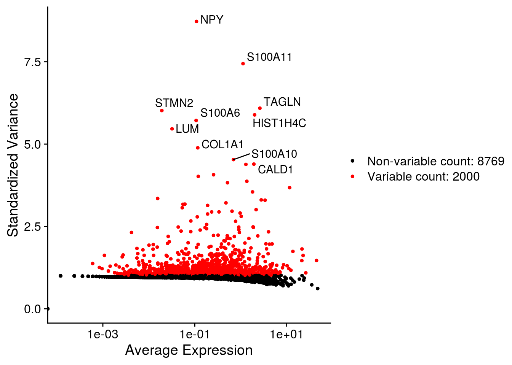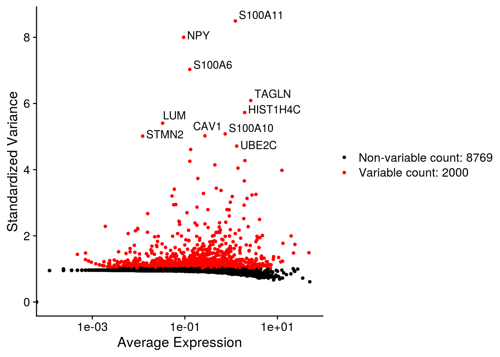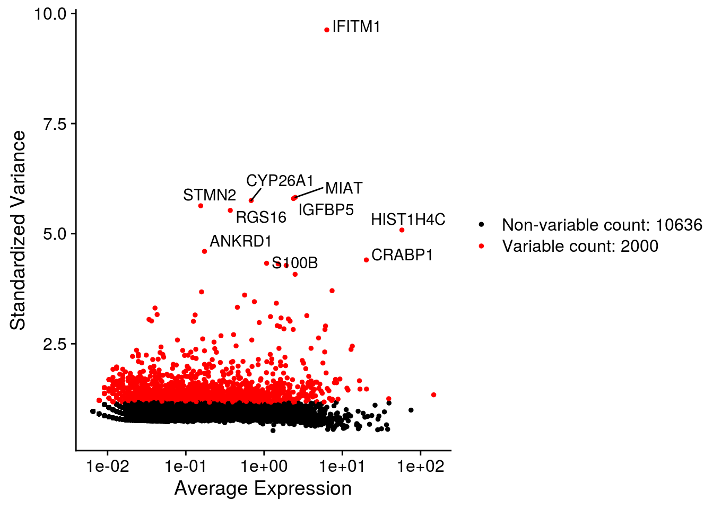
# find anchors & integrate
as <- FindIntegrationAnchors(so, verbose = FALSE)
so <- IntegrateData(anchorset = as, dims = seq_len(30), verbose = FALSE)
## We scale the data so that mean expression is 0 and variance is 1, across cells
## We also regress out the number of UMIs.
## We don't have mitochondrial genes for the NES
DefaultAssay(so) <- "integrated"
so <- ScaleData(so, verbose = FALSE, vars.to.regress = "sum")We perform dimension reduction with t-SNE and UMAP based on PCA results.
so <- RunPCA(so, npcs = 30, verbose = FALSE)
so <- RunTSNE(so, reduction = "pca", dims = seq_len(20),
seed.use = 1, do.fast = TRUE, verbose = FALSE)
so <- RunUMAP(so, reduction = "pca", dims = seq_len(20),
seed.use = 1, verbose = FALSE)# top genes that are associated with the first two PCs
VizDimLoadings(so, dims = 1:2, reduction = "pca")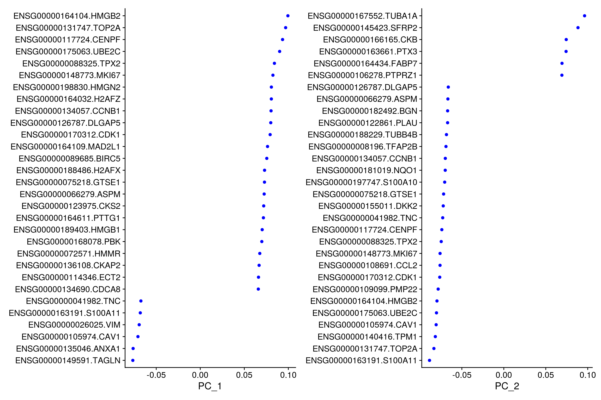
## PCA plot
DimPlot(so, reduction = "pca", group.by = "sample_id")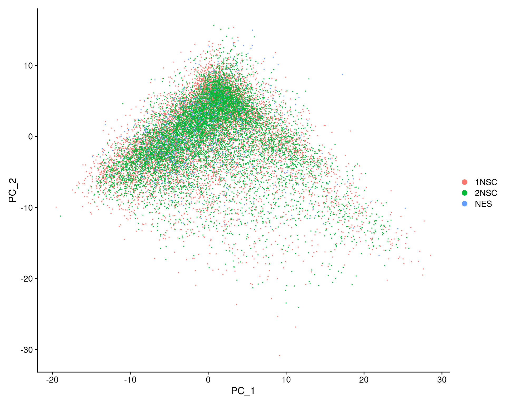
# elbow plot with the ranking of PCs based on the % of variance explained
ElbowPlot(so, ndims = 30)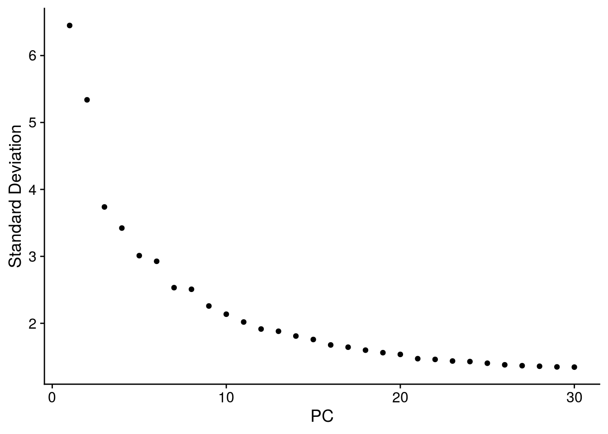
## heatmaps of the top 20 PCs and the 500 most extreme cells for each component
DimHeatmap(so, dims = 1:20, cells = 500, balanced = TRUE, nfeatures = 20 )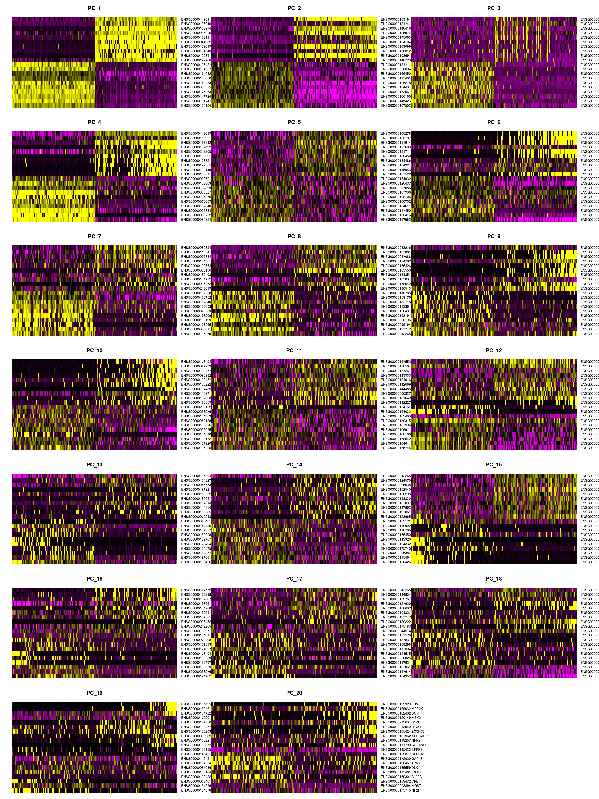
We cluster the cells using the reduced PCA dimensions.
so <- FindNeighbors(so, reduction = "pca", dims = seq_len(20), verbose = FALSE)
for (res in c(0.1, 0.2, 0.4, 0.8, 1, 1.2, 2))
so <- FindClusters(so, resolution = res, random.seed = 1, verbose = FALSE)We plot the dimension reduction (DR) and color by sample, group and cluster ID
thm <- theme(aspect.ratio = 1, legend.position = "none")
ps <- lapply(c("sample_id", "group_id", "ident"), function(u) {
p1 <- DimPlot(so, reduction = "tsne", group.by = u) + thm
p2 <- DimPlot(so, reduction = "umap", group.by = u)
lgd <- get_legend(p2)
p2 <- p2 + thm
list(p1, p2, lgd)
plot_grid(p1, p2, lgd, nrow = 1,
rel_widths = c(1, 1, 0.5))
})
plot_grid(plotlist = ps, ncol = 1)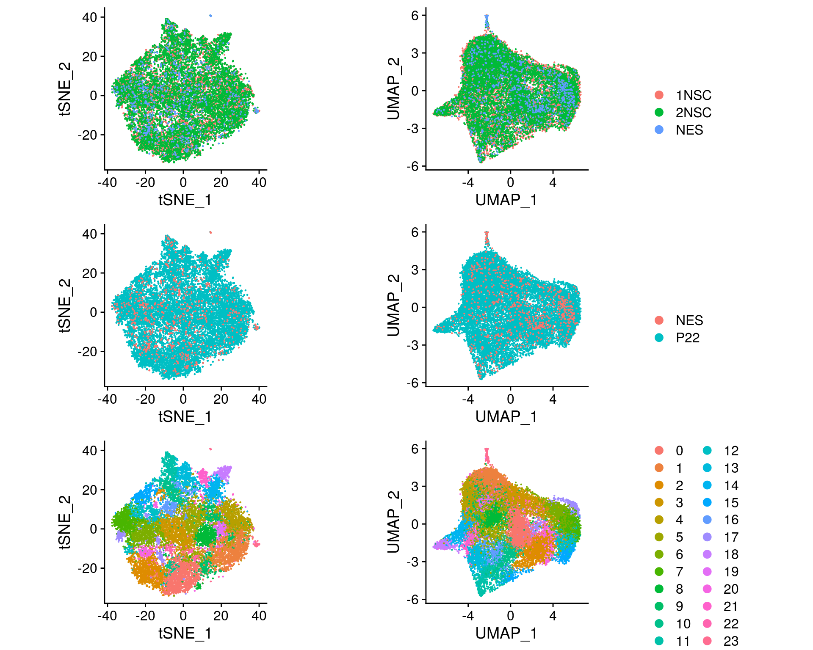
cs <- sample(colnames(so), 1e4) ## subsample cells
.plot_features <- function(so, dr, id) {
FeaturePlot(so, cells = cs, features = id, reduction = dr, pt.size = 0.4,
cols = c("grey", "blue")) +
guides(col = guide_legend(nrow = 11,
override.aes = list(size = 3, alpha = 1))) +
theme_void() + theme(aspect.ratio = 1)
}
ids <- c("sum", "detected", "subsets_Mt_percent")
for (id in ids) {
cat("## ", id, "\n")
p1 <- .plot_features(so, "tsne", id)
lgd <- get_legend(p1)
p1 <- p1 + theme(legend.position = "none") + ggtitle("tSNE")
p2 <- .plot_features(so, "umap", id) + theme(legend.position = "none") +
ggtitle("UMAP")
ps <- plot_grid(plotlist = list(p1, p2), nrow = 1)
p <- plot_grid(ps, lgd, nrow = 1, rel_widths = c(1, 0.2))
print(p)
cat("\n\n")
}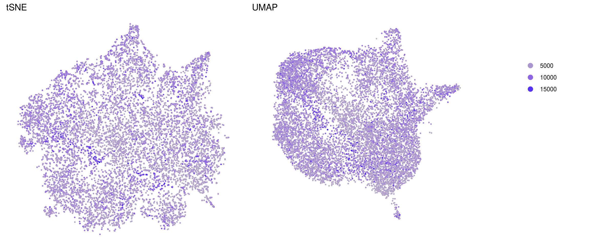
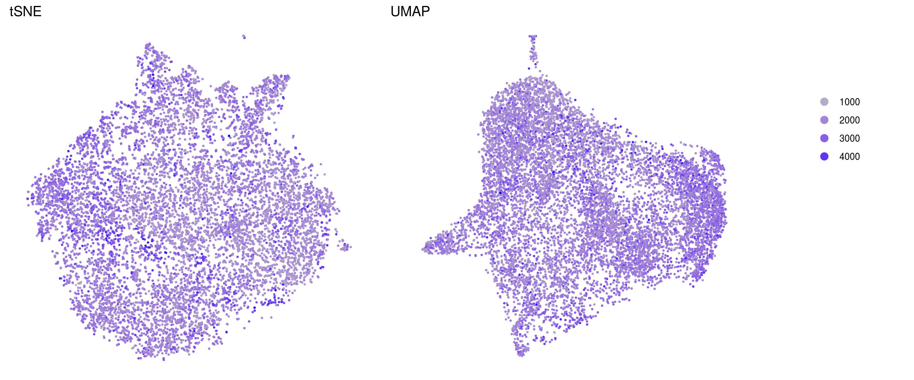
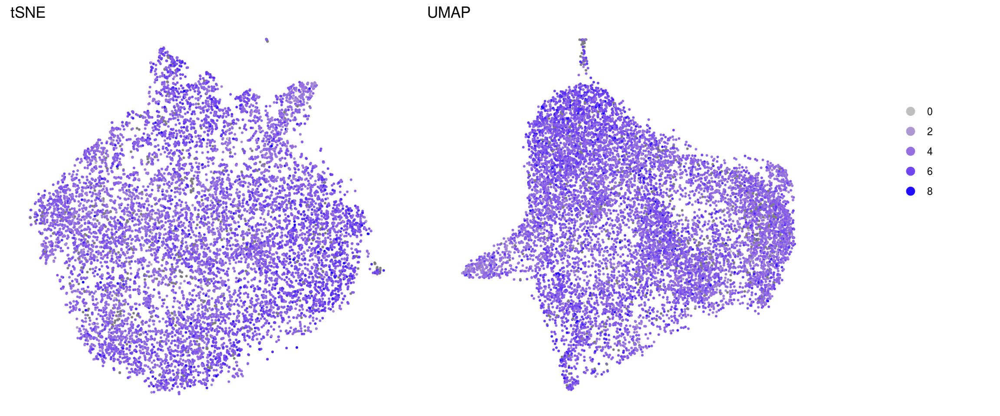
saveRDS(so, file.path("output", "Lam-01-clustering.rds"))
sessionInfo()R version 4.0.0 (2020-04-24)
Platform: x86_64-pc-linux-gnu (64-bit)
Running under: Ubuntu 16.04.6 LTS
Matrix products: default
BLAS: /usr/local/R/R-4.0.0/lib/libRblas.so
LAPACK: /usr/local/R/R-4.0.0/lib/libRlapack.so
locale:
[1] LC_CTYPE=en_US.UTF-8 LC_NUMERIC=C
[3] LC_TIME=en_US.UTF-8 LC_COLLATE=en_US.UTF-8
[5] LC_MONETARY=en_US.UTF-8 LC_MESSAGES=en_US.UTF-8
[7] LC_PAPER=en_US.UTF-8 LC_NAME=C
[9] LC_ADDRESS=C LC_TELEPHONE=C
[11] LC_MEASUREMENT=en_US.UTF-8 LC_IDENTIFICATION=C
attached base packages:
[1] parallel stats4 stats graphics grDevices utils datasets
[8] methods base
other attached packages:
[1] HDF5Array_1.16.1 rhdf5_2.32.2
[3] data.table_1.12.8 dplyr_1.0.0
[5] biomaRt_2.44.1 future_1.17.0
[7] rtracklayer_1.48.0 stringr_1.4.0
[9] SingleCellExperiment_1.10.1 SummarizedExperiment_1.18.1
[11] DelayedArray_0.14.0 matrixStats_0.56.0
[13] Biobase_2.48.0 GenomicRanges_1.40.0
[15] GenomeInfoDb_1.24.2 IRanges_2.22.2
[17] S4Vectors_0.26.1 BiocGenerics_0.34.0
[19] Seurat_3.1.5 ggplot2_3.3.2
[21] cowplot_1.0.0 workflowr_1.6.2
loaded via a namespace (and not attached):
[1] backports_1.1.8 BiocFileCache_1.12.0 plyr_1.8.6
[4] igraph_1.2.5 lazyeval_0.2.2 splines_4.0.0
[7] BiocParallel_1.22.0 listenv_0.8.0 digest_0.6.25
[10] htmltools_0.5.0 magrittr_1.5 memoise_1.1.0
[13] cluster_2.1.0 ROCR_1.0-11 globals_0.12.5
[16] Biostrings_2.56.0 askpass_1.1 prettyunits_1.1.1
[19] colorspace_1.4-1 blob_1.2.1 rappdirs_0.3.1
[22] ggrepel_0.8.2 xfun_0.15 crayon_1.3.4
[25] RCurl_1.98-1.2 jsonlite_1.7.0 survival_3.2-3
[28] zoo_1.8-8 ape_5.4 glue_1.4.1
[31] gtable_0.3.0 zlibbioc_1.34.0 XVector_0.28.0
[34] leiden_0.3.3 Rhdf5lib_1.10.0 future.apply_1.6.0
[37] scales_1.1.1 DBI_1.1.0 Rcpp_1.0.4.6
[40] viridisLite_0.3.0 progress_1.2.2 reticulate_1.16
[43] bit_1.1-15.2 rsvd_1.0.3 tsne_0.1-3
[46] htmlwidgets_1.5.1 httr_1.4.1 RColorBrewer_1.1-2
[49] ellipsis_0.3.1 ica_1.0-2 farver_2.0.3
[52] pkgconfig_2.0.3 XML_3.99-0.4 uwot_0.1.8
[55] dbplyr_1.4.4 tidyselect_1.1.0 labeling_0.3
[58] rlang_0.4.6 reshape2_1.4.4 later_1.1.0.1
[61] AnnotationDbi_1.50.1 munsell_0.5.0 tools_4.0.0
[64] generics_0.0.2 RSQLite_2.2.0 ggridges_0.5.2
[67] evaluate_0.14 yaml_2.2.1 knitr_1.29
[70] bit64_0.9-7 fs_1.4.2 fitdistrplus_1.1-1
[73] purrr_0.3.4 RANN_2.6.1 pbapply_1.4-2
[76] nlme_3.1-148 whisker_0.4 compiler_4.0.0
[79] plotly_4.9.2.1 curl_4.3 png_0.1-7
[82] tibble_3.0.1 stringi_1.4.6 RSpectra_0.16-0
[85] lattice_0.20-41 Matrix_1.2-18 vctrs_0.3.1
[88] pillar_1.4.4 lifecycle_0.2.0 lmtest_0.9-37
[91] RcppAnnoy_0.0.16 bitops_1.0-6 irlba_2.3.3
[94] httpuv_1.5.4 patchwork_1.0.1 R6_2.4.1
[97] promises_1.1.1 KernSmooth_2.23-17 gridExtra_2.3
[100] codetools_0.2-16 MASS_7.3-51.6 assertthat_0.2.1
[103] openssl_1.4.2 rprojroot_1.3-2 withr_2.2.0
[106] GenomicAlignments_1.24.0 sctransform_0.2.1 Rsamtools_2.4.0
[109] GenomeInfoDbData_1.2.3 hms_0.5.3 grid_4.0.0
[112] tidyr_1.1.0 rmarkdown_2.3 Rtsne_0.15
[115] git2r_0.27.1